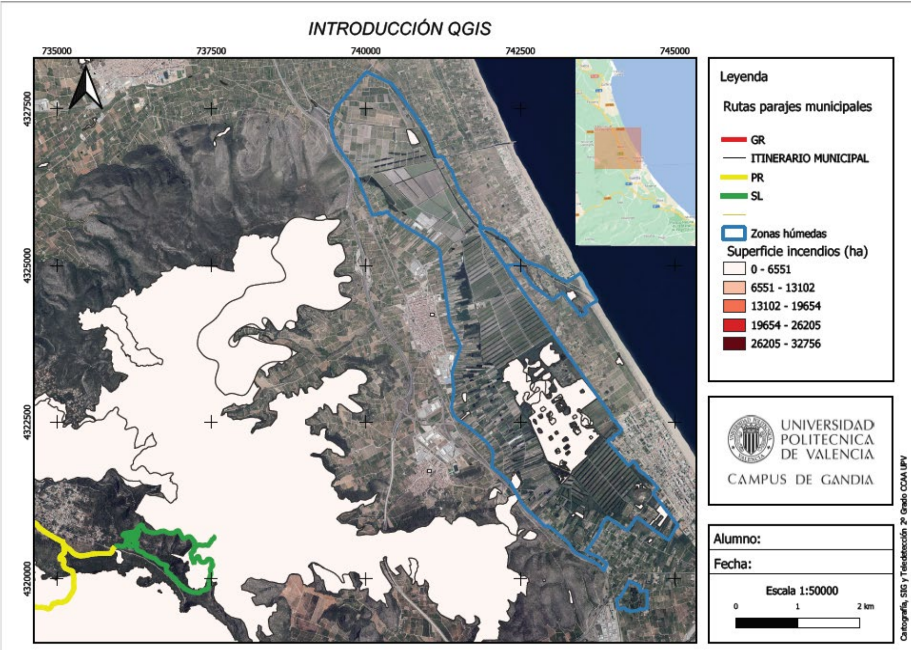
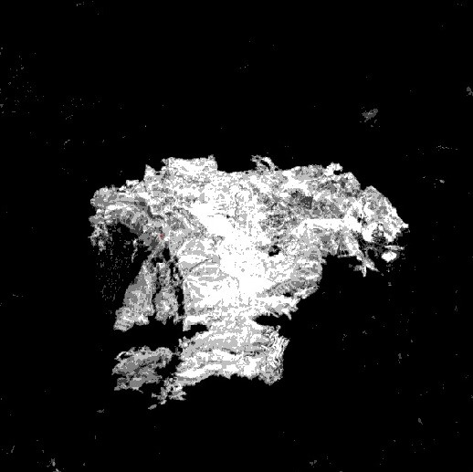
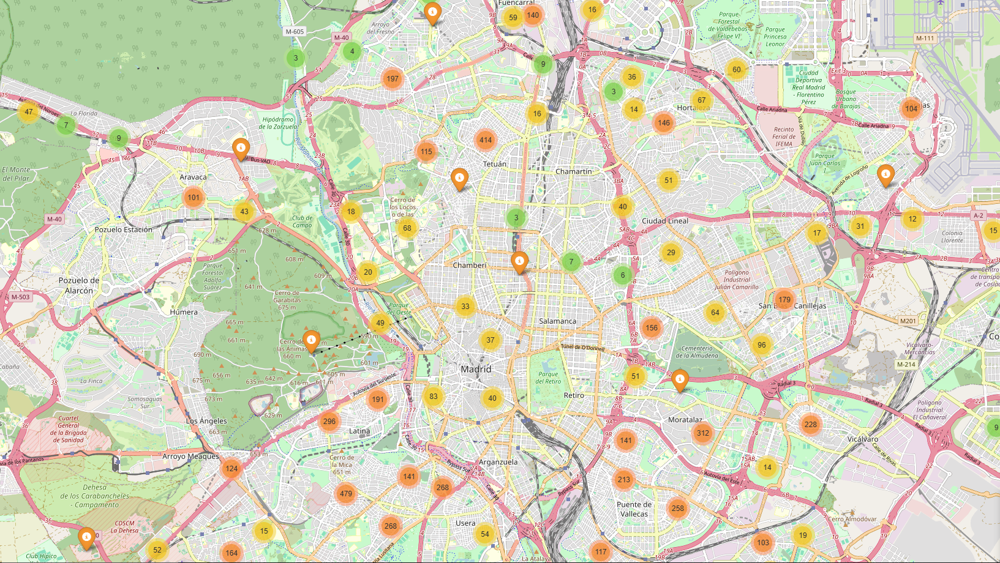
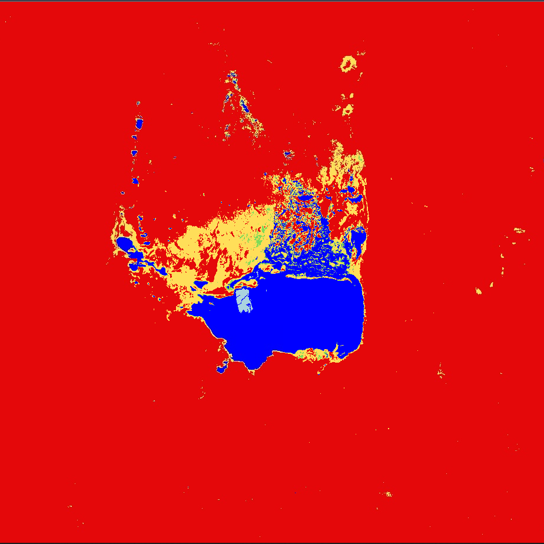

Explorando el mundo
a través de los datos.
Un análisis geográfico profundo sobre el clima, la demografía y el relieve.

Temperatura y Precipitaciones
PDF
Zonas
WebMap

Severidad
WebMapP7: Gráficos
Datos
JPG

Madrid
WebMapP9: Índices
SAVI/EVI
WebMap
